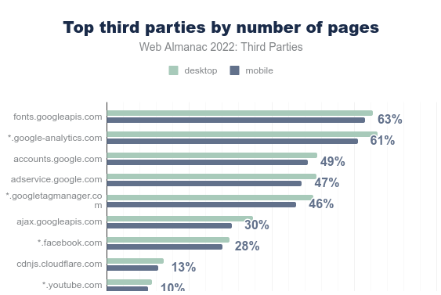

Content in 3 minutes
What is a third party service? They are services that allow to integrate a functionality or a complex content via code that we have little control over. The 10 most frequent third-party services block the loading of sites for about 1.4s. Google fonts are the most common service even though its use may contravene the RGPD.
The impacts of third-party services are far from negligible. In terms of environment, performance, security but also personal data management, attention grabbing and sometimes even accessibility. It is therefore advisable to use them as little as possible. This last point is supported by the RGESN and GR491 guidelines.
Best practices for limiting third-party services?
- Your site is under construction: do not include third-party services
- Your site is already built: limit the addition of content or remove certain third-party services (by checking compatibility with the design, marketing or strategy already in place)
- Your site will load faster: a bonus for sustainable digital as well as user experience.
A concrete example:
During a client audit, it was decided to remove the twitter feed present on several pages of the site. Results:
A significant improvement in metrics and indicators. In particular:
- Reduction of the battery discharge rate by 36%.
- Reduction of the CPU load by 76%
- Reduced the volume of data transferred by 68%.
Context
Third-party services are present on 94% of websites and represent 45% of the requests made by all websites. These services are used to integrate a functionality or complex content via code most often hosted on another site, with little or no control over it. Thus, it can be an analytics solution, a video, the contents of a social network, a captcha, trackers, etc.
Here is a list (sorted by categories), built by Patrick Hulce.

You can find more information about them as well as statistics on their use in the Third-parties chapter of the Web Almanac : https://almanac.httparchive.org/en/2022/third-parties
The statistics show that the 10 most frequent third-party services block the loading of sites for an average of 1.4s and that technical optimizations are often possible (minification, compression, delayed loading, but also removal of obsolete JS code). Also, most of the most used third-party services are linked to Google.

It is interesting to note that Google fonts are the most widely used service, even though their use may contravene the GDPR. One way to fix this is to host the corresponding files yourself. Of course, the best thing to do is to stick to the available system fonts as much as possible.
All this shows that the impact of third-party services, especially on websites but also on mobile applications, is far from negligible. In terms of environment, performance, security, but also in terms of personal data management, attention grabbing and sometimes even accessibility (see the Temesis article on this subject [FR]: https://www.temesis.com/blog/contenus-tiers-exemptes-deroges-audites/). It is therefore advisable to use them as little as possible.
At Greenspector, this is something we look at very closely for our customers, using specific tools to list third-party services and estimate their respective impacts. This is a significant added value of measurement. It is also an essential step in reducing environmental impacts and improving the user experience.
Today, let’s look at a best practice of sobriety, which consists of integrating as few third-party services as possible into a digital service.
Existing reference systems
This criterion can be found in the Specifications family of the RGESN [FR](Référentiel Général d’écoconception de services numériques): 2.5 – Has the digital service taken into account the environmental impacts of third-party services used during their selection ?
This is also found in GR491 (Reference Guide to Sustainable Design of Digital Services): Are third-party services (social network feeds, social wall, carousels, google maps, etc.) not used for convenience to compensate for the lack of content production resources ?
Good practice
Objective
This sobriety best practice consists in limiting the number of third-party services in a digital service.
When to use it?
It occurs at the design stage of the service (choose not to include the services in question) but also when adding content (for example, do not integrate directly a Youtube video in an article).
Ease of implementation
It is technically easy to remove a third-party service. On the other hand, this removal may require upstream discussions on design, marketing or strategy. That’s why this decision should be made as early as possible in the project.
Estimated gains
The gains can be significant in several areas related to Sustainable Digital. In all cases, this proves beneficial to the user.
Case study
While working for a client (initial audit then daily measurements and expertise), it was decided to remove the Twitter feed on all pages of the site. The modification took place on February 1st, 2023. The measurements on the homepage highlight the gains linked to this modification, which can be observed by measuring the consumption of IT resources and energy via the Greenspector tool.

Evolution of page load metrics between February 1 and 2, 2023

Ecoscore (web benchmark) of February 1st 2023

Ecoscore (web benchmark) of February 2, 2023
We can see here a significant improvement of the metrics and indicators. In particular:
- 36% reduction in battery discharge rate
- 76% reduction in CPU load
- Reduction in the volume of data transferred by 68%.
Following the environmental projection via the Greenspector methodology, we can see that the impact of this homepage was, before deleting the Twitter feed, 0.95g eqCO2. After deleting this feed, it is 0.54g eqCO2.
The page in question has more than 2.5 million views per year.
For the sake of simplicity, we leave aside here the contributions of the client-side cache (even if they are certainly non-negligible), the disparities of time spent by each person on this page, as well as the modifications made during this time.
We go from an impact of 2.38T eqCO2 to 1.36T eqCO2 over one year, which is a reduction of more than 40% of the impact in terms of greenhouse gas emissions.
For the other impacts assessed, the trend is similar. Thus, over one year, we go from 383047 to 224675 L of water consumed and from 383 to 230 m² of land use.
To go further
For third-party services that are deemed essential, there are methods to reduce their impact (via efficiency). This can include integrating an interactive map or video as a clickable thumbnail.
Some articles approach the subject from a web performance perspective:
- Reducing the Site-Speed Impact of Third-Party Tags, par Andy Davies : improving performance through tag management
- How to Find the Third-Parties on Your Site, par Simon Hearne : presentation of the RequestMap tool, used on Webpagetest to detect third-party services. This tool was already discussed on an article about auditing Android applications.
- Identifying, Auditing, and Discussing Third Parties, par Harry Roberts : how to audit third-party services on a website
- Reducing The Web’s Carbon Footprint: Optimizing Social Media Embeds, par Michelle Baker
- Partytown : a library to handle third-party services through a WebWorker
- Are my third parties green, par Fershad Irani : an online tool to assess the environmental impacts of third-party services through the origin of electricity used by the servers